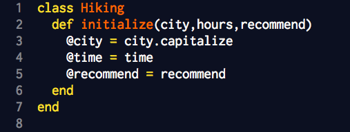
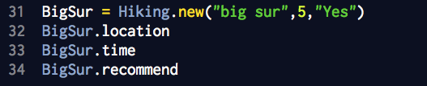
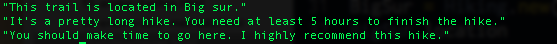

Ruby Classes
Molding your own Ruby objects
29.12.2014
There are times when Ruby seems to know exactly what you need; it has exactly the object and method you need to get the job done. For all other times, Ruby gives you the ability to create a class. Classes let you engineer your own specific object and its behaviors.
A class is really a Ruby object with a set of defined methods. It is useful for creating models of real world objects that you want to manipulate or operate with code. Creating your own classes is useful, because you can label each object and method what you want, making the program more intuitive.
For example, let's say you want to create an object called Hiking, that let's you talk about where and how long the hike is and whether you would recommend it.
To do this, open a new class:
Now, inside the class, you need to create the initiate method that will set the parameters required to start a new instance of this class later on. For the purpose of this example, we will ask for three parameters: 1. What city the hiking trial is in, 2. How many hours it took to hike, and 3. If you would recommend the hike.

The @ symbols variables are examples of instance variables. These are accessible anywhere inside the class. Without the @ symbol before the name, each variable is only accessible in each method. that means when we create the next method (def xxxx), we wouldn't be able to use the variables we just created.
Next, we will create 3 new methods to call on Hiking objects. The methods will take each input parameter and return a string with a description of the hike.

We've created our new class. Now we can create as many hiking objects as we want and call these methods on them to know more about the object.
In the example below, I am staring a new object, and calling it BigSur. We can call any of the 3 methods we created on it to learn more.

This will give us the following information.

That's it! Now, you can create as many new entries of hiking trail without having to retype all the code blocks.